Single entry point for three categorical-sequence visualisations.
type = "heatmap"(default): dense carpet, rows reordered bysort/ dendrogram (single panel).type = "index": same data layout, but rows separated by thin gaps (no dendrogram). Supports grouping viagroupor anet_clustering, plus ancolxnrowfacet grid.type = "distribution": dispatches todistribution_plot.
Usage
sequence_plot(
x,
type = c("heatmap", "index", "distribution"),
sort = c("lcs", "frequency", "start", "end", "hamming", "osa", "lv", "dl", "qgram",
"cosine", "jaccard", "jw"),
tree = NULL,
group = NULL,
scale = c("proportion", "count"),
geom = c("area", "bar"),
na = TRUE,
normalize = FALSE,
trim = NULL,
panel = c("both", "summary", "channels"),
expand = NULL,
combine = NULL,
rest = c("clusters", "pooled", "none"),
rest_label = "Other states",
trim_clusterwise = FALSE,
row_gap = 0,
dendrogram_width = 1.2,
k = NULL,
k_color = "white",
k_line_width = 2.5,
state_colors = NULL,
na_color = "grey90",
cell_border = NA,
frame = FALSE,
width = NULL,
height = NULL,
main = NULL,
show_n = TRUE,
time_label = "Time",
xlab = NULL,
y_label = NULL,
ylab = NULL,
tick = NULL,
ncol = NULL,
nrow = NULL,
combined = TRUE,
legend = NULL,
legend_size = NULL,
legend_title = NULL,
legend_ncol = NULL,
legend_border = NA,
legend_bty = "n"
)Arguments
- x
Wide-format sequence data. Accepts:
- data.frame / matrix
Rows = sequences, columns = time points.
- netobject
Extracts
$data.- net_clustering
From
build_clusters. Uses$data,$assignmentsfor grouping, and$distancefor dendrogram.- netobject_group
From
cluster_networkorbuild_networkon a clustering. Extracts data and assignments fromattr(, "clustering").- net_mmm
From
build_mmm. Uses$data(falling back to$models[[1]]$data) and$assignments.- tna
From the tna package. Decodes integer-encoded sequences.
- mcml
From
build_mcml(built from sequences). Produces a multichannel plot: one panel per cluster plus a macroSummarypanel.type = "heatmap"/"index"draw the carpet (each channel's own states solid, other clusters a faded wash);type = "distribution"draws the stacked distribution (addnormalize = TRUEfor a TraMineR-styleseqdplotwhere each time point sums to 1). See the section Multichannel view of an mcml for the options that shape it, and Value for what it returns.
- type
One of
"heatmap"(default),"index", or"distribution".- sort
Row-ordering strategy for heatmap / within-panel for index. One of
"lcs"(default),"frequency","start","end", or anybuild_clustersdistance ("hamming","osa","lv","dl","qgram","cosine","jaccard","jw").- tree
Optional
hclust/dendrogram/agnesobject to supply row ordering (heatmap only; overridessort).- group
Optional grouping vector (length
nrow(x)) producing one facet per group. Index/distribution only. Ignored for heatmap.- scale, geom, na
Passed to
distribution_plotwhentype = "distribution". For anmcml(type = "distribution"),na = FALSEdrops theNA(ended) band and shows every time point as shares of the sequences still running there, so each panel stacks to 100 percent (cluster panels only withrest = "clusters"or"pooled"; a time point where no sequence is running stays empty).- normalize
mcml+type = "distribution"only. WhenTRUE, each time point is normalised to sum to 1 within its channel (TraMineR-styleseqdplotcomposition); whenFALSE(default) the stack shows prevalence and is capped with anNAband.- trim
Optional time-axis truncation, to stop a few long sequences from stretching the plot. Applies to all three types (including the
mcmlmultichannel view).NULL(default) plots the full width. A fraction in(0, 1)drops everything past that quantile of sequence lengths (e.g.trim = 0.95keeps the columns covering the shortest 95% of sequences); a value>= 1is an absolute cut (trim = 50keeps the first 50 time points).- panel
mcml+type = "distribution"only. Which panel to draw."both"(default) stacks the macroSummarychannel and the per-cluster channels on one figure, each with its own legend;"summary"draws the macro channel alone, keyed and coloured by cluster;"channels"draws the per-cluster channels alone, keyed and coloured by state. The macro channel is keyed by cluster and the rest by state, so a cluster and a state can land on the same colour – drawing one panel avoids that and gives it a default title.- expand
For an
mcml, names of clusters whose member states are shown individually in the Summary band;"all"orTRUEexpands every cluster. The per-cluster channels are unaffected. DefaultNULLkeys the Summary band by cluster.- combine
For an
mcml, clusters to merge into one channel. A character vector merges one group (e.g.combine = c("Cognitive", "Affective")); a list merges several, and its names label the merged channels (default label"Cognitive + Affective"). A merged group acts as one cluster throughout the figure: one per-cluster panel holding all its states, one key in the Summary band, and one faded band in the other panels.expandis resolved after merging, so it can name the merged label. Errors on unknown clusters, a group of fewer than two, or a cluster in two groups. DefaultNULLdraws the partition as built.- rest
For an
mcml, how a cluster's panel shows the time its subjects spend in other clusters."clusters"(default): one faded band (or wash, in the carpet) per other cluster."pooled": all other clusters as one grey band labelledrest_label."none": left blank, so the panel shows only its own states; in the distribution view theNA(ended) band is dropped too, and the panel's height at each time point is the share of subjects in that cluster. Ignored withnormalize = TRUE, which rescales each panel to its own states. The Summary panel is unaffected.- rest_label
For an
mcml, the legend text for time spent in other clusters. Default"Other states"; e.g."Others"or"Rest of states". The pooled band (rest = "pooled") takes it as is; the per-cluster bands read"Social (Other states)". Must not equal a state or cluster name.- trim_clusterwise
Grouped
type = "index"/"distribution"only, and only whentrimis a fraction.FALSE(default) computes one cutoff on the pooled data and applies it to every panel, so all facets share the same width and the time axes stay aligned.TRUEcrops each group to its own length quantile, so panels can end up at different widths (ragged axes). Absolutetrim(>= 1) ignores this - the column is the same everywhere either way.- row_gap
Fraction of row height used as vertical gap between sequences in index plots.
0(default) = dense like heatmap. Try0.15for visible separators at low row counts.- dendrogram_width
Width ratio of the dendrogram panel (heatmap).
- k
Optional integer. When supplied in
type = "heatmap", cuts the dendrogram intokclusters and draws thin horizontal separators between them in the carpet. Ignored when there is no dendrogram (e.g.sort = "start") or for other types.- k_color
Colour for the cluster separator lines. Default
"white".- k_line_width
Line width for the cluster separators. Default
2.5.- state_colors
Colours for the fill keys. Two forms: unnamed - one colour per state, in level order (states are ordered as
sort(unique(...))); named - a lookup, where only the keys you name are overridden and every other key keeps its default. Names this figure does not draw are dropped with a message naming them, so one project-wide palette can be handed to every plot and each takes the keys that apply to it.For an
mcmlthe named form reaches the whole figure, not just the states: a cluster name colours itsSummaryband, its channel strip and its faded band in the other panels, and a group merged bycombineis named by its label (the list name you gave it, or"A + B").rest_labelis a key too. Sostate_colors = c(plan = "#0072B2", "Planning + Monitoring" = "#D55E00")recolours one state and one combined cluster and leaves the rest of the palette alone.- na_color
Colour for
NAcells.- cell_border
Cell border colour.
NA(default) = off.- frame
FALSE(default) draws no box - axis ticks and labels still appear.TRUEdraws a box around each panel.- width, height
Optional device dimensions in inches. When supplied, opens a new graphics device via
grDevices::dev.new(). In knitr chunks use thefig.width/fig.heightchunk options instead.- main
Plot title.
- show_n
Append
"(n = N)"to the title.- time_label, xlab
X-axis label.
xlabis an alias.- y_label, ylab
Y-axis label (distribution only).
ylabalias.- tick
Show every Nth x-axis label.
NULL= auto.- ncol, nrow
Facet grid dimensions (index + distribution). Ignored when
combined = FALSE.- combined
Index and distribution types only. When
TRUE(default), groups are arranged on one figure viagraphics::layout(). WhenFALSE, each group is drawn on its own page (one full-size figure per group, with its own legend). Single-group calls (G == 1) ignore this argument. Heatmap is always single-figure.- legend
Legend position:
"bottom","right", or"none".NULL(default) resolves to"right"for every type.- legend_size
Legend text size.
NULL(default) auto-scales from the device width so the legend looks proportional at 5 in vs 12 in figures (clamped to[0.65, 1.2]).- legend_title
Optional legend title.
- legend_ncol
Number of legend columns.
- legend_border
Swatch border colour.
- legend_bty
"n"or"o".
Value
An mcml input returns the multichannel figure: one panel
per channel (the macro Summary and one per cluster), stacked,
each with its own legend of its own clusters or states. When more than
one channel is drawn this is an mcml_sequence_plot (a
gtable whose print method draws it); when panel =
"summary" leaves a single channel it is a plain ggplot. Every
other input draws with base graphics and
returns, invisibly, a list whose shape depends on type:
"heatmap"ord(integer row order actually plotted),codes(the integer-encoded, trimmed sequence matrix),palette,levels(state labels, parallel topalette), andsort_used(the ordering strategy applied,"net_clustering"when a clustering dendrogram was used)."index"codes,palette,levels,orders(list of integer row orders, one per panel, indexing the original rows) andgroups(panel labels)."distribution"Whatever
distribution_plotreturns:counts,proportions,levels,palette,groups.
Multichannel view of an mcml
An mcml built from sequences stores, for every cluster, the full
sequence matrix with the other clusters' states blanked out. Each cluster
is therefore a channel, and sequence_plot() stacks them:
SummaryThe macro sequence: at every time point, the cluster each subject is in.
- One panel per cluster
That cluster's own states, plus the time its subjects spend in the other clusters.
The options apply in this order, so each one sees the result of the one before:
combinemerges clusters into one channel. The merged group is then one cluster throughout the figure: one panel with all its states, one Summary key, one band in the other panels. The object itself is not changed.expandopens clusters (including a merged group, by its label) into their member states in the Summary panel only.restandrest_labelset how a cluster's panel shows the other clusters: one faded band per cluster labelled"<cluster> (<rest_label>)"(rest = "clusters"), one grey band labelledrest_label("pooled"), or nothing ("none").na(distribution only) keeps theNAband of sequences that have ended (TRUE, shares of all subjects) or drops it (FALSE, shares of the subjects still running, so every panel stacks to 100 percent unlessrest = "none").normalize = TRUEinstead rescales each cluster panel to its own states, which ignoresrestandna.
panel draws the Summary or the cluster panels alone, and
trim cuts the time axis for every panel at once.
Examples
sequence_plot(trajectories)
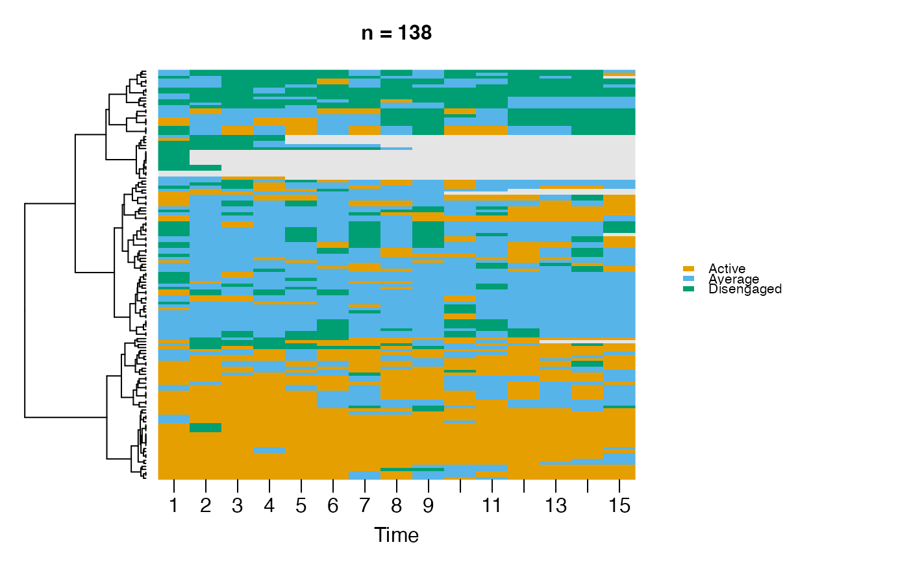
# \donttest{
sequence_plot(trajectories, type = "index")
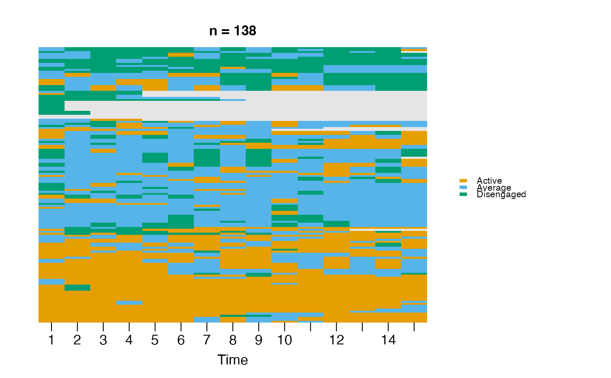
sequence_plot(trajectories, type = "distribution")
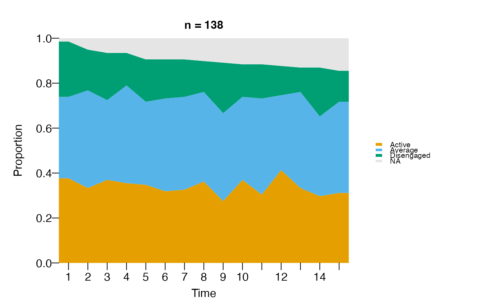
# Multichannel MCML view: one channel per cluster + a macro Summary.
fit <- build_mcml(
group_regulation_long,
clusters = list(Cognitive = c("discuss", "synthesis", "consensus", "cohesion"),
Regulation = c("plan", "monitor", "adapt", "coregulate"),
Affective = "emotion"),
actor = "Actor", action = "Action", time = "Time")
sequence_plot(fit) # multichannel carpet
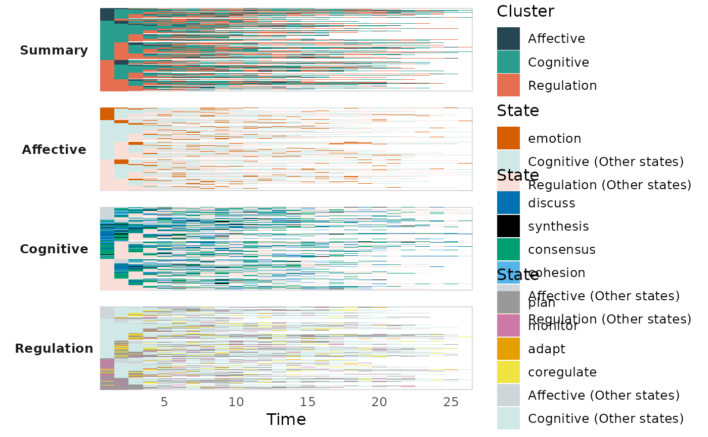
sequence_plot(fit, type = "distribution") # prevalence + NA band
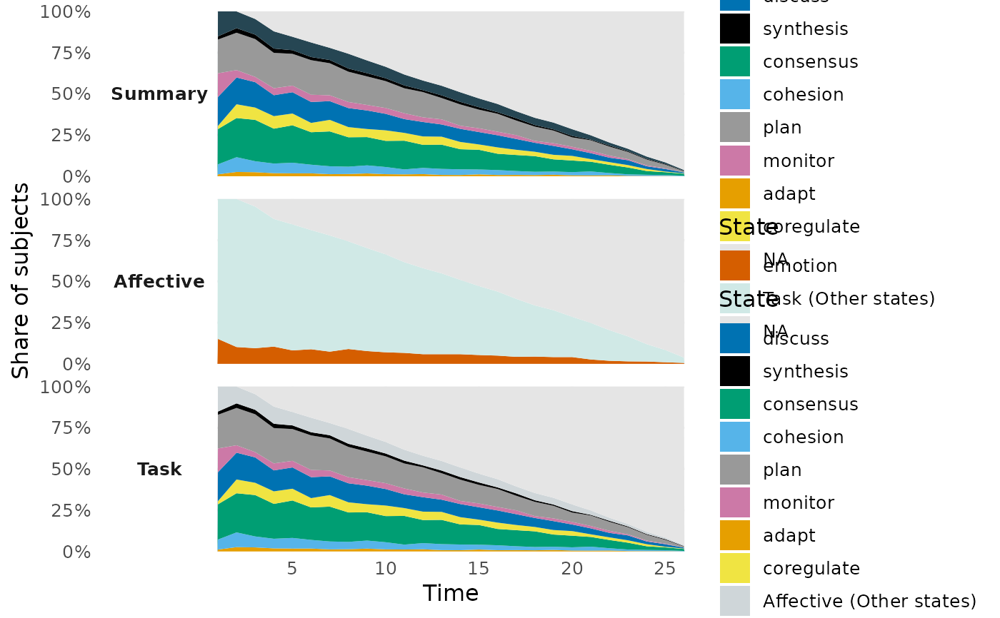
sequence_plot(fit, type = "distribution", normalize = TRUE) # seqdplot (sums to 1)
 # Shape the multichannel view (see the section above).
sequence_plot(fit, type = "distribution",
combine = c("Cognitive", "Affective")) # two channels as one
# Shape the multichannel view (see the section above).
sequence_plot(fit, type = "distribution",
combine = c("Cognitive", "Affective")) # two channels as one
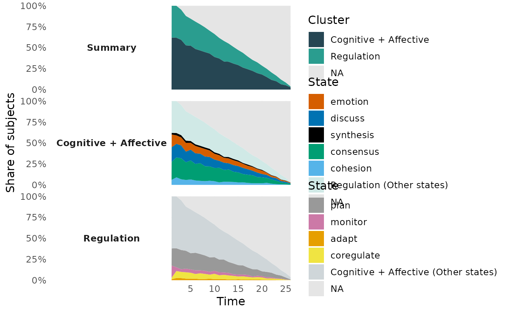
sequence_plot(fit, type = "distribution",
combine = list(Task = c("Cognitive", "Regulation")),
expand = "Task") # merge, then open
 sequence_plot(fit, type = "distribution", panel = "channels",
rest = "pooled", na = FALSE) # one grey band, no NA
sequence_plot(fit, type = "distribution", panel = "channels",
rest = "pooled", na = FALSE) # one grey band, no NA
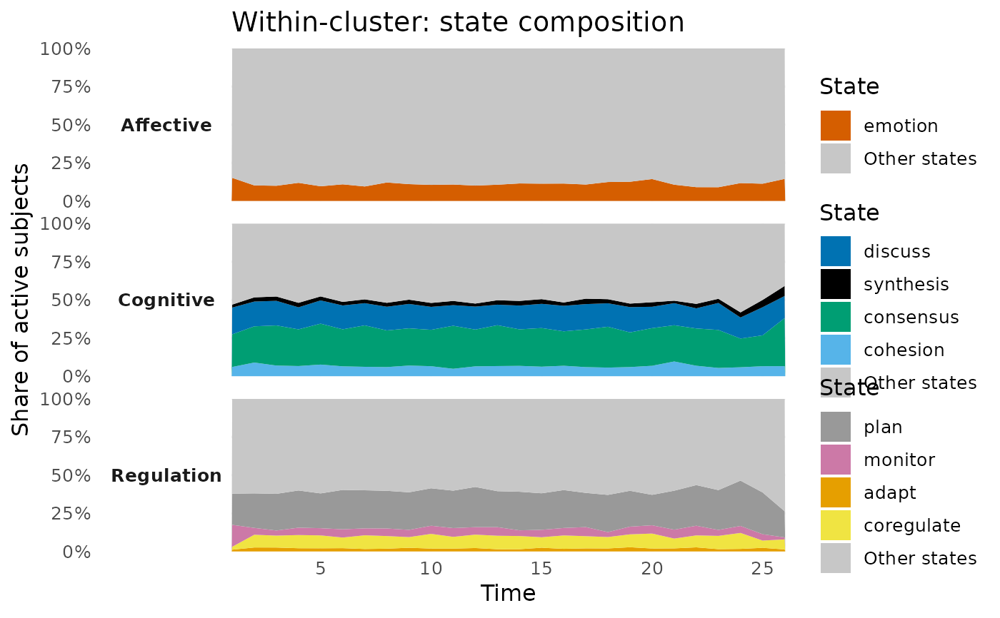
sequence_plot(fit, type = "distribution", panel = "channels",
rest = "pooled", rest_label = "Rest of states")
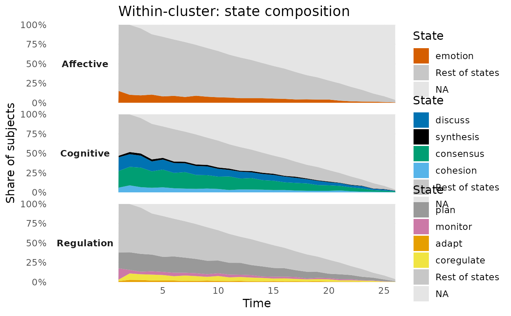
sequence_plot(fit, type = "distribution", panel = "channels",
rest = "none") # own states only
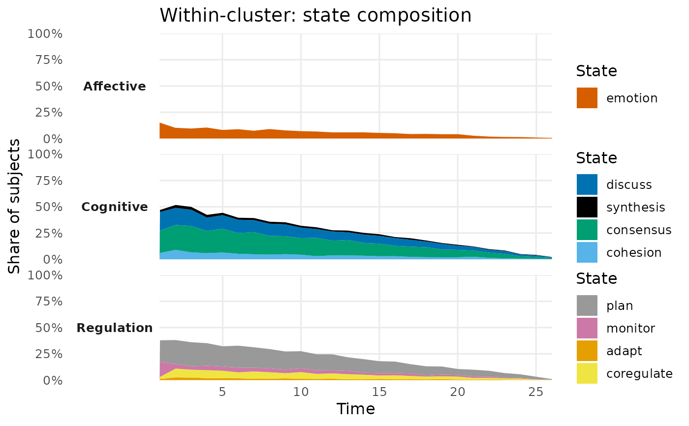
sequence_plot(fit, rest = "pooled") # carpet, pooled wash
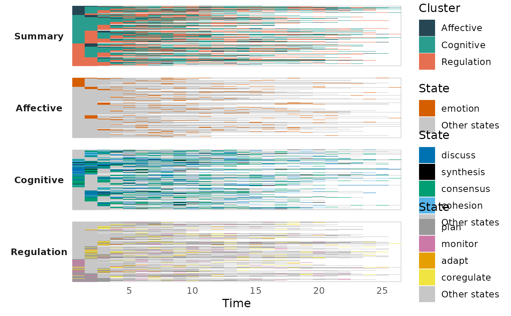
# Colour by name: one state, one cluster, one combined group. Everything
# not named keeps its default colour.
sequence_plot(fit, type = "distribution",
combine = list(Task = c("Cognitive", "Regulation")),
state_colors = c(Task = "#0072B2", Affective = "#D55E00",
emotion = "#CC79A7"))
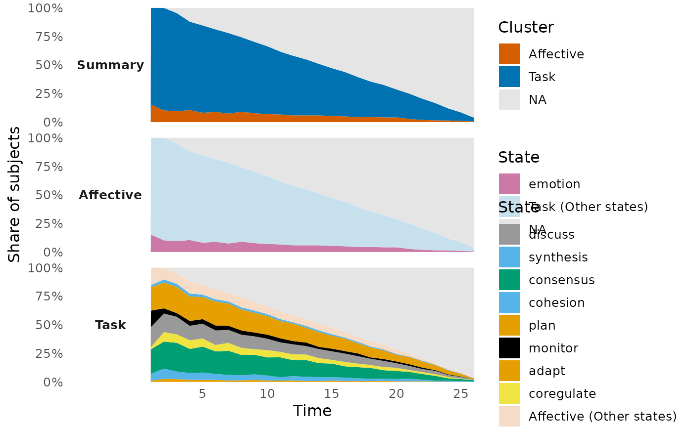
# }